光的衍射
衍射现象
波在传播传播过程中遇到障碍物，能够绕过障碍物的边缘前进。这种偏离直线传播的现象成文衍射现象。
波长越大，障碍物越小，衍射越明显。
惠更斯-菲涅耳原理
波前上的每个面元可以看为次波源，它们向四周发射次波；波场中任一场点的扰动，是所有次波源所贡献的次级扰动的相干叠加 。
设波前 Σ \Sigma Σ d S \mathrm{d}S d S P P P d U ~ ( P ) \mathrm{d}\tilde{U}(P) d U ~ ( P ) U ~ ( P ) \tilde{U}(P) U ~ ( P )
U ~ ( P ) = ∯ ( Σ ) d U ~ ( P ) \tilde{U}(P)
=\oiint\limits_{(\Sigma)}\mathrm{d}\tilde{U}(P) U ~ ( P ) = ( Σ ) ∬ d U ~ ( P )
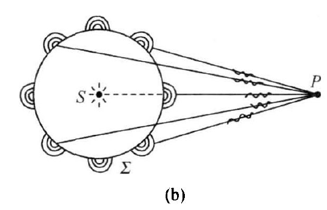
菲涅耳衍射积分式
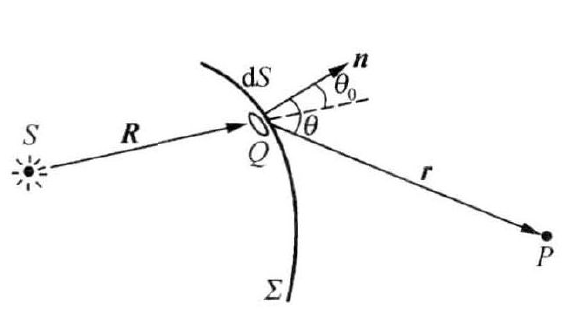
决定 d U ~ ( P ) \mathrm{d}\tilde{U}(P) d U ~ ( P )
d U ~ ( P ) ∝ d S 波前上作为次波源的微分面元 ∝ U ~ 0 ( Q ) 次波源自身的复振幅 ∝ 1 r e i k r 次波源发射球面波到达场点 ∝ f ( θ 0 , θ ) 倾斜因子用以表明次波面源的发射并非各向同性 \begin{aligned}
\mathrm{d}\tilde{U}(P)
&\propto \mathrm{d}S ~~波前上作为次波源的微分面元\\
&\propto \tilde{U}_0(Q) ~~次波源自身的复振幅\\
&\propto \frac{1}{r}e^{\mathrm{i}kr} ~~次波源发射球面波到达场点\\
&\propto f(\theta_0,\theta) ~~倾斜因子用以表明次波面源的发射并非各向同性
\end{aligned} d U ~ ( P ) ∝ d S 波前上作为次波源的微分面元 ∝ U ~ 0 ( Q ) 次波源自身的复振幅 ∝ r 1 e i k r 次波源发射球面波到达场点 ∝ f ( θ 0 , θ ) 倾斜因子用以表明次波面源的发射并非各向同性
综合以上因素，U ~ ( P ) = ∯ ( Σ ) d U ~ ( P ) \displaystyle{\tilde{U}(P)=\oiint\limits_{(\Sigma)}\mathrm{d}\tilde{U}(P) } U ~ ( P ) = ( Σ ) ∬ d U ~ ( P )
U ~ ( P ) = K ∯ ( Σ ) f ( θ 0 , θ ) U ~ 0 ( Q ) e i k r r d S \boxed{
\tilde{U}(P)
=K\oiint\limits_{(\Sigma)}f(\theta_0,\theta)\tilde{U}_0(Q)\frac{e^{\mathrm{i}kr}}{r}\mathrm{d}S
} U ~ ( P ) = K ( Σ ) ∬ f ( θ 0 , θ ) U ~ 0 ( Q ) r e i k r d S
其中，Q Q Q d S \mathrm{d}S d S Σ \Sigma Σ Q Q Q U ~ 0 ( Q ) \tilde{U}_0(Q) U ~ 0 ( Q ) Q Q Q r r r Q Q Q P P P f ( θ 0 , θ ) f(\theta_0,\theta) f ( θ 0 , θ )
基尔霍夫衍射积分式
基尔霍夫从定态波场的亥姆霍兹方程出发，利用矢量场论中的格林公式，在 k r ≫ 1 kr\gg 1 k r ≫ 1 r ≫ λ r\gg \lambda r ≫ λ
U ~ ( P ) = − i λ ∯ ( Σ ) 1 2 ( cos θ 0 + cos θ ) U ~ 0 ( Q ) e i k r r d S \tilde{U}(P)
=\frac{-\mathrm{i}}{\lambda}\oiint\limits_{(\Sigma)}\frac{1}{2}(\cos\theta_0+\cos\theta)\tilde{U}_0(Q)\frac{e^{\mathrm{i}kr}}{r}\mathrm{d}S U ~ ( P ) = λ − i ( Σ ) ∬ 2 1 ( cos θ 0 + cos θ ) U ~ 0 ( Q ) r e i k r d S
凡是隔离实在的点光源与场点的任意闭合曲面，都可以作为衍射积分式中的积分面。
基尔霍夫边界条件
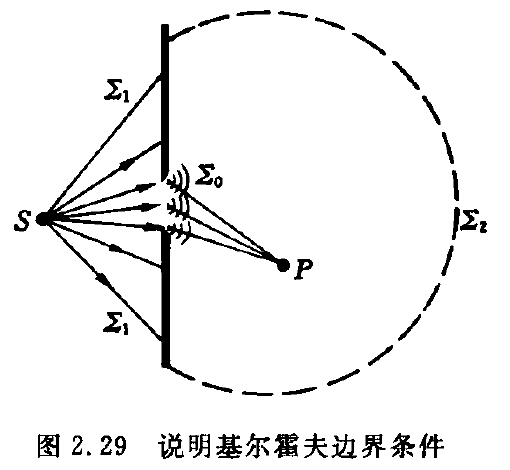
取闭合面：
( Σ ) = Σ 0 + Σ 1 + Σ 2 (\Sigma)
=\Sigma_0+\Sigma_1+\Sigma_2 ( Σ ) = Σ 0 + Σ 1 + Σ 2
其中，Σ 0 \Sigma_0 Σ 0 Σ 1 \Sigma_1 Σ 1 Σ 2 \Sigma_2 Σ 2
基尔霍夫边界条件认为：
（1）无穷远面Σ 2 \Sigma_2 Σ 2
（2）光屏面 Σ 1 \Sigma_1 Σ 1
（3）只有光孔面 Σ 0 \Sigma_0 Σ 0 U ~ 0 ′ ( Q ) \tilde{U}_0'(Q) U ~ 0 ′ ( Q ) U ~ 0 ( Q ) \tilde{U}_0(Q) U ~ 0 ( Q ) U ~ 0 ′ ( Q ) = U ~ 0 ( Q ) \tilde{U}_0'(Q)=\tilde{U}_0(Q) U ~ 0 ′ ( Q ) = U ~ 0 ( Q )
基于此，基尔霍夫衍射积分式简化为：
U ~ ( P ) = − i λ ∬ Σ 0 f ( θ 0 , θ ) U ~ 0 ( Q ) 1 r e i k r d S \tilde{U}(P)
=\frac{-\mathrm{i}}{\lambda}\iint\limits_{\Sigma_0} f(\theta_0,\theta)\tilde{U}_0(Q) \frac{1}{r}e^{\mathrm{i}kr}\mathrm{d}S U ~ ( P ) = λ − i Σ 0 ∬ f ( θ 0 , θ ) U ~ 0 ( Q ) r 1 e i k r d S
其中，倾斜因子为 f ( θ 0 , θ ) = 1 2 ( cos θ 0 + cos θ ) f(\theta_0,\theta)=\frac{1}{2}(\cos\theta_0+\cos\theta) f ( θ 0 , θ ) = 2 1 ( cos θ 0 + cos θ )
傍轴条件衍射积分式
傍轴条件下，
倾斜因子 f ( θ 0 , θ ) = 1 2 ( cos θ 0 + cos θ ) ≈ 1 f(\theta_0,\theta)=\frac{1}{2}(\cos\theta_0+\cos\theta)\approx 1 f ( θ 0 , θ ) = 2 1 ( cos θ 0 + cos θ ) ≈ 1
球面次波函数 1 r e i k r ≈ 1 r 0 e i k r \frac{1}{r}e^{\mathrm{i}kr}\approx \frac{1}{r_0}e^{\mathrm{i}kr} r 1 e i k r ≈ r 0 1 e i k r
得到傍轴条件衍射积分公式：
U ~ ( P ) = − i λ r 0 ∬ Σ 0 U ~ 0 ( Q ) e i k r d S \tilde{U}(P)
=\frac{-\mathrm{i}}{\lambda r_0}\iint\limits_{\Sigma_0}\tilde{U}_0(Q)e^{\mathrm{i}kr}\mathrm{d}S U ~ ( P ) = λ r 0 − i Σ 0 ∬ U ~ 0 ( Q ) e i k r d S
衍射系统及其分类——菲涅耳衍射与夫琅禾费衍射
菲涅耳衍射
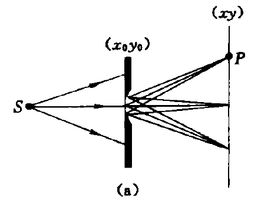
光源到衍射屏、衍射屏到接收屏之间的距离均为有限远，或其中之一是有限远的场合；或者说，球面波照明 时在有限远处接收 的是菲涅耳衍射场。
夫琅禾费衍射
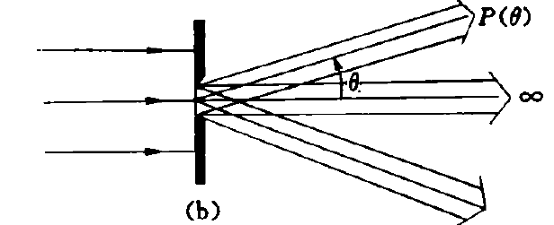
光源到衍射屏、衍射屏到接收屏的距离都是无限远；或者说。平面波照明 时在无穷远处接收 的是夫琅禾费衍射场。
衍射巴比涅原理
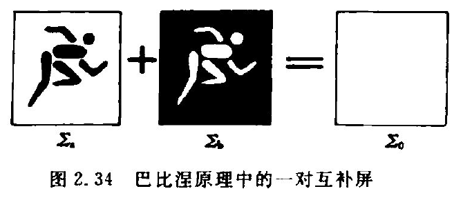
设 Σ a , Σ b \Sigma_a,\Sigma_b Σ a , Σ b Σ a \Sigma_a Σ a U ~ a ( P ) \tilde{U}_a(P) U ~ a ( P ) Σ b \Sigma_b Σ b U ~ b ( P ) \tilde{U}_b(P) U ~ b ( P ) Σ 0 \Sigma_0 Σ 0 U ~ 0 ( P ) \tilde{U}_0(P) U ~ 0 ( P )
Σ a + Σ b = Σ 0 \Sigma_a+\Sigma_b
=\Sigma_0 Σ a + Σ b = Σ 0
根据基尔霍夫衍射积分公式，结合二重积分的区域可加性，有：
U ~ 0 ( P ) = − i λ ∬ ( Σ 0 ) f ( θ 0 , θ ) U ~ 0 ( Q ) 1 r e i k r d S = − i λ ∬ ( Σ a ) + ( Σ b ) f ( θ 0 , θ ) U ~ 0 ( Q ) 1 r e i k r d S = − i λ ∬ ( Σ a ) f ( θ 0 , θ ) U ~ 0 ( Q ) 1 r e i k r d S + − i λ ∬ ( Σ b ) f ( θ 0 , θ ) U ~ 0 ( Q ) 1 r e i k r d S = U ~ a ( P ) + U ~ b ( P ) \begin{aligned}
\tilde{U}_0(P)
&=\frac{-\mathrm{i}}{\lambda}\underset{(\Sigma_0)}{\iint} f(\theta_0,\theta)\tilde{U}_0(Q)\frac{1}{r}e^{\mathrm{i}kr}\mathrm{d}S \\
&=\frac{-\mathrm{i}}{\lambda}\underset{(\Sigma_a)+(\Sigma_b)}{\iint} f(\theta_0,\theta)\tilde{U}_0(Q)\frac{1}{r}e^{\mathrm{i}kr}\mathrm{d}S \\
&=\frac{-\mathrm{i}}{\lambda}\underset{(\Sigma_a)}{\iint} f(\theta_0,\theta)\tilde{U}_0(Q)\frac{1}{r}e^{\mathrm{i}kr}\mathrm{d}S
+\frac{-\mathrm{i}}{\lambda}\underset{(\Sigma_b)}{\iint} f(\theta_0,\theta)\tilde{U}_0(Q)\frac{1}{r}e^{\mathrm{i}kr}\mathrm{d}S\\
&=\tilde{U}_a(P)+\tilde{U}_b(P)
\end{aligned} U ~ 0 ( P ) = λ − i ( Σ 0 ) ∬ f ( θ 0 , θ ) U ~ 0 ( Q ) r 1 e i k r d S = λ − i ( Σ a ) + ( Σ b ) ∬ f ( θ 0 , θ ) U ~ 0 ( Q ) r 1 e i k r d S = λ − i ( Σ a ) ∬ f ( θ 0 , θ ) U ~ 0 ( Q ) r 1 e i k r d S + λ − i ( Σ b ) ∬ f ( θ 0 , θ ) U ~ 0 ( Q ) r 1 e i k r d S = U ~ a ( P ) + U ~ b ( P )
最终结果是：
U ~ 0 ( P ) = U ~ a ( P ) + U ~ b ( P ) \tilde{U}_0(P)
=\tilde{U}_a(P)+\tilde{U}_b(P) U ~ 0 ( P ) = U ~ a ( P ) + U ~ b ( P )
这一反映两个孔型互补屏产生的两个衍射场关系的方程，称为巴比涅原理 (Babinet principle)
巴比涅原理的应用
由于自由光场是容易知道的，故我们可以由单缝衍射场，直接导出细丝衍射场；由圆孔衍射场，直接导出圆屏衍射场
圆孔和圆屏菲涅耳衍射
半波带法
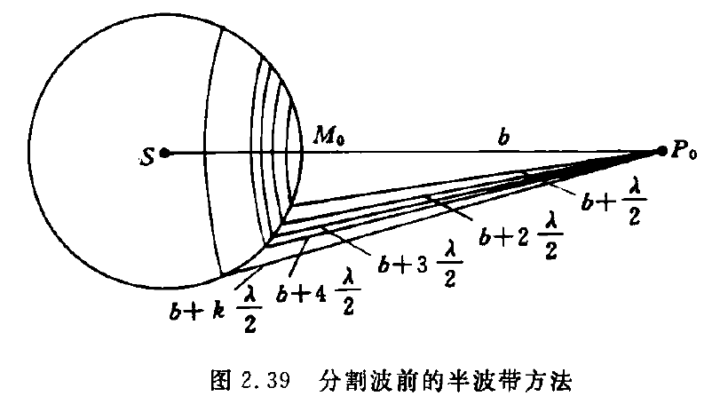
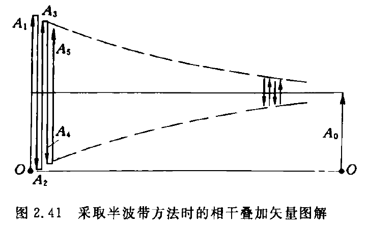
螺旋式曲线
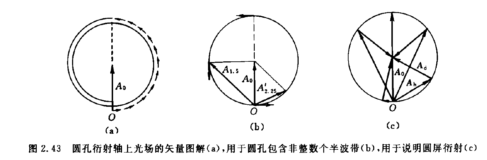
效仿半波带方法，将每个半波带再细分为 N N N N N N P 0 P_0 P 0 k k k I ( P 0 ) I(P_0) I ( P 0 )
单缝夫琅禾费衍射
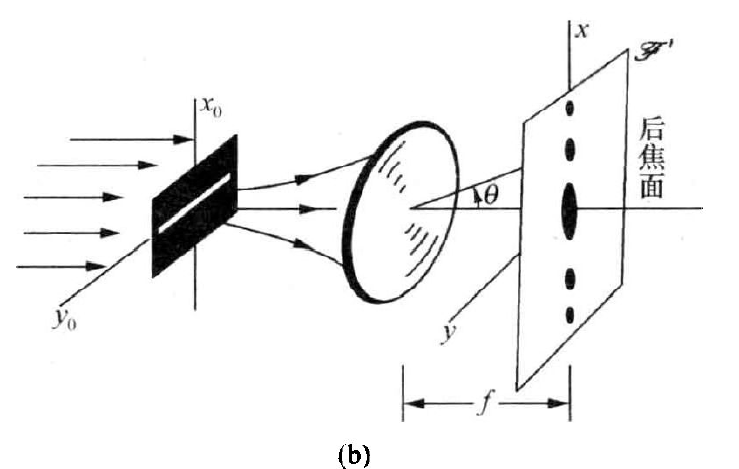
平行光照射单缝，在透镜后焦面 F ′ \mathscr{F}' F ′
单狭缝的宽度 Δ x 0 = a ≪ \Delta x_0=a\ll Δ x 0 = a ≪ Δ y 0 = b \Delta y_0=b Δ y 0 = b x x x
矢量图解法
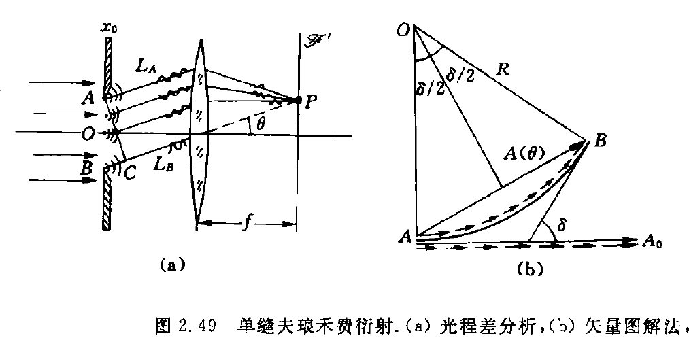
θ \theta θ P P P I ( θ ) I(\theta) I ( θ )
由透镜的性质，像空间后焦面上的一个点对应于物空间的一个方向，即从单缝出发衍射角为 θ \theta θ P P P
为此，将单缝的宽度 Δ x 0 = a \Delta x_0=a Δ x 0 = a
这段圆弧 A B ⌢ \mathop{AB}\limits^{\frown} A B ⌢ A A A B B B δ \delta δ A A A B B B δ A B \delta_{AB} δ A B δ A B \delta_{AB} δ A B
光程差为：
Δ = L ( B P ) − L ( A P ) = n B C ‾ = n a sin θ \begin{aligned}
\Delta
&=L(BP)-L(AP) \\
&=n\overline{BC} \\
&=na\sin\theta
\end{aligned} Δ = L ( BP ) − L ( A P ) = n BC = na sin θ
由光程差和相位差的关系，可得：
δ A B = 2 π λ 0 Δ = 2 π λ a sin θ \begin{aligned}
\delta_{AB}
&=\frac{2\pi}{\lambda_0}\Delta \\
&=\frac{2\pi}{\lambda }a\sin\theta
\end{aligned} δ A B = λ 0 2 π Δ = λ 2 π a sin θ
A B ⌢ = A 0 \mathop{AB}\limits^{\frown}=A_0 A B ⌢ = A 0 ∠ A O B = δ \angle AOB=\delta ∠ A OB = δ R = A B ⌢ δ \displaystyle{R=\frac{\mathop{AB}\limits^{\frown}}{\delta} } R = δ A B ⌢
A ( θ ) = 2 R sin δ 2 = 2 ⋅ A B ⌢ δ ⋅ sin δ 2 = A 0 sin δ 2 ( δ 2 ) \begin{aligned}
A(\theta)
&=2R\sin\frac{\delta}{2} \\
&=2\cdot\frac{\mathop{AB}\limits^{\frown}}{\delta}\cdot\sin\frac{\delta}{2} \\
&=A_0\frac{\sin \frac{\delta}{2}}{(\frac{\delta}{2})}
\end{aligned} A ( θ ) = 2 R sin 2 δ = 2 ⋅ δ A B ⌢ ⋅ sin 2 δ = A 0 ( 2 δ ) sin 2 δ
引入宗量：
α = δ 2 = π a sin θ λ \alpha
=\frac{\delta}{2}
=\frac{\pi a\sin\theta}{\lambda} α = 2 δ = λ πa sin θ
得到单缝夫琅禾费衍射场的振幅分布和强度分布：
A ( θ ) = A 0 sin α α , α = π a sin θ λ A(\theta)
=A_0\frac{\sin\alpha}{\alpha},~~\alpha=\frac{\pi a\sin\theta}{\lambda} A ( θ ) = A 0 α sin α , α = λ πa sin θ
I ( θ ) = I 0 ( sin α α ) 2 , I 0 = A 0 2 , α = π a sin θ λ I(\theta)
=I_0\bigg( \frac{\sin\alpha}{\alpha} \bigg)^2,~~I_0=A_0^2,\alpha=\frac{\pi a\sin\theta}{\lambda} I ( θ ) = I 0 ( α sin α ) 2 , I 0 = A 0 2 , α = λ πa sin θ
其中，A 0 A_0 A 0
衍射积分法
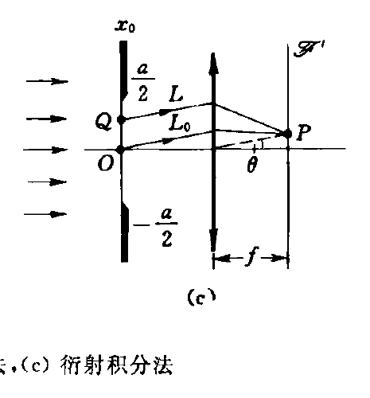
单缝夫琅禾费衍射场也可以由傍轴衍射积分公式求得：
U ~ ( P ) = − i λ r 0 ∬ U ~ 0 ( Q ) e i k r d S \tilde{U}(P)
=\frac{-\mathrm{i}}{\lambda r_0}\iint\tilde{U}_0(Q) e^{\mathrm{i}kr}\mathrm{d}S U ~ ( P ) = λ r 0 − i ∬ U ~ 0 ( Q ) e i k r d S
经透镜变换，振幅系数：
1 r 0 → 1 f \frac{1}{r_0}\to \frac{1}{f} r 0 1 → f 1
平行光正入射：
U ~ 0 ( x 0 ) = A \tilde{U}_0(x_0)
=A U ~ 0 ( x 0 ) = A
积分面元：
d S = b d x 0 \mathrm{d}S
=b\mathrm{d}x_0 d S = b d x 0
相位因子 e i k r e^{\mathrm{i}kr} e i k r
k r = k n ⋅ n r = k 0 L = k 0 ( L − L 0 ) + k 0 L 0 = − k 0 n x 0 sin θ + k 0 L 0 = − k x 0 sin θ + k 0 L 0 \begin{aligned}
kr
&=\frac{k}{n}\cdot nr \\
&=k_0 L \\
&=k_0(L-L_0)+k_0 L_0 \\
&=-k_0 n x_0 \sin\theta+k_0 L_0 \\
&=-kx_0 \sin\theta+k_0 L_0
\end{aligned} k r = n k ⋅ n r = k 0 L = k 0 ( L − L 0 ) + k 0 L 0 = − k 0 n x 0 sin θ + k 0 L 0 = − k x 0 sin θ + k 0 L 0
其中，L 0 L_0 L 0 O O O θ \theta θ P P P L 0 ( O P ) L_0(OP) L 0 ( OP )
综上，衍射积分式可以表示为：
U ~ ( θ ) = − i λ r 0 ∬ U ~ 0 ( Q ) e i k r d S = − i λ f ∫ x 0 = − a / 2 x 0 = a / 2 A ⋅ e i ( − k x 0 sin θ + k 0 L 0 ) ⋅ b d x 0 = − i λ f A b e i k 0 L 0 ∫ x 0 = − a / 2 x 0 = a / 2 e − i k x 0 sin θ d x 0 = − i λ f A b e i k 0 L 0 ⋅ 2 sin ( a 2 k sin θ ) k sin θ = − i λ f ( a b ) A e i k 0 L 0 ⋅ sin ( a 2 k sin θ ) a 2 k sin θ = − i λ f ( a b ) A e i k 0 L 0 ⋅ sin ( a 2 2 π λ sin θ ) a 2 2 π λ sin θ = − i λ f ( a b ) A e i k 0 L 0 ⋅ sin ( π a sin θ λ ) π a sin θ λ = − i λ f ( a b ) A ⋅ sin α α , α = π a sin θ λ = c ~ e i k 0 L 0 ⋅ sin α α , c ~ = − i λ f ( a b ) A , α = π a sin θ λ \begin{aligned}
\tilde{U}(\theta)
&=\frac{-\mathrm{i}}{\lambda r_0}\iint\tilde{U}_0(Q) e^{\mathrm{i}kr}\mathrm{d}S \\
&=\frac{-\mathrm{i}}{\lambda f}\int_{x_0=-a/2}^{x_0=a/2} A\cdot e^{\mathrm{i}(-k x_0 \sin\theta+k_0 L_0)}\cdot b\mathrm{d}x_0 \\
&=\frac{-\mathrm{i}}{\lambda f}Abe^{\mathrm{i}k_0 L_0}\int_{x_0=-a/2}^{x_0=a/2}e^{-\mathrm{i} k x_0\sin\theta}\mathrm{d}x_0 \\
&=\frac{-\mathrm{i}}{\lambda f}Abe^{\mathrm{i}k_0 L_0}\cdot \frac{2\sin (\frac{a}{2}k\sin\theta)}{k\sin\theta} \\
&=\frac{-\mathrm{i}}{\lambda f}(ab)A e^{\mathrm{i} k_0 L_0}\cdot\frac{\sin(\frac{a}{2}k\sin\theta) }{\frac{a}{2}k\sin\theta} \\
&=\frac{-\mathrm{i}}{\lambda f}(ab)A e^{\mathrm{i} k_0 L_0}\cdot \frac{\sin (\frac{a}{2}\frac{2\pi}{\lambda }\sin\theta)}{\frac{a}{2}\frac{2\pi}{\lambda }\sin\theta} \\
&=\frac{-\mathrm{i}}{\lambda f}(ab)A e^{\mathrm{i} k_0 L_0}\cdot \frac{\sin(\frac{\pi a\sin\theta}{\lambda })}{\frac{\pi a\sin\theta}{\lambda}} \\
&=\frac{-\mathrm{i}}{\lambda f}(ab)A\cdot\frac{\sin \alpha}{\alpha},~~\alpha=\frac{\pi a\sin\theta}{\lambda} \\
&=\boxed{\tilde{c} e^{\mathrm{i}k_0 L_0}\cdot\frac{\sin\alpha}{\alpha}},~~\tilde{c}=\frac{-\mathrm{i}}{\lambda f}(ab)A,~~\alpha=\frac{\pi a\sin\theta}{\lambda}
\end{aligned} U ~ ( θ ) = λ r 0 − i ∬ U ~ 0 ( Q ) e i k r d S = λ f − i ∫ x 0 = − a /2 x 0 = a /2 A ⋅ e i ( − k x 0 s i n θ + k 0 L 0 ) ⋅ b d x 0 = λ f − i A b e i k 0 L 0 ∫ x 0 = − a /2 x 0 = a /2 e − i k x 0 s i n θ d x 0 = λ f − i A b e i k 0 L 0 ⋅ k sin θ 2 sin ( 2 a k sin θ ) = λ f − i ( ab ) A e i k 0 L 0 ⋅ 2 a k sin θ sin ( 2 a k sin θ ) = λ f − i ( ab ) A e i k 0 L 0 ⋅ 2 a λ 2 π sin θ sin ( 2 a λ 2 π sin θ ) = λ f − i ( ab ) A e i k 0 L 0 ⋅ λ πa s i n θ sin ( λ πa s i n θ ) = λ f − i ( ab ) A ⋅ α sin α , α = λ πa sin θ = c ~ e i k 0 L 0 ⋅ α sin α , c ~ = λ f − i ( ab ) A , α = λ πa sin θ
光强分布为：
I ( θ ) = U ~ U ~ ∗ = I 0 ( sin α α ) 2 \begin{aligned}
I(\theta)
&=\tilde{U}\tilde{U}^* \\
&=I_0\bigg( \frac{\sin\alpha}{\alpha} \bigg)^2
\end{aligned} I ( θ ) = U ~ U ~ ∗ = I 0 ( α sin α ) 2
其中，
c ~ = − i λ f ( a b ) A , I 0 = c ~ c ~ ∗ = ( a b ) 2 ( λ f ) 2 A 2 , α = π a sin θ λ \tilde{c}
=\frac{-\mathrm{i}}{\lambda f}(ab)A,~~
I_0
=\tilde{c}\tilde{c}^*
=\frac{(ab)^2}{(\lambda f)^2}A^2,~~
\alpha
=\frac{\pi a\sin\theta}{\lambda} c ~ = λ f − i ( ab ) A , I 0 = c ~ c ~ ∗ = ( λ f ) 2 ( ab ) 2 A 2 , α = λ πa sin θ
A ( θ ) = A 0 sin α α , α = π a sin θ λ A(\theta)
=A_0\frac{\sin\alpha}{\alpha},~~
\alpha
=\frac{\pi a\sin\theta}{\lambda} A ( θ ) = A 0 α sin α , α = λ πa sin θ
单缝夫琅禾费衍射的主要特征
（1）最大值
I ( θ ) = I 0 sin ( π a sin θ λ ) π a sin θ λ I(\theta)
=I_0\frac{\sin(\frac{\pi a\sin\theta}{\lambda})}{\frac{\pi a\sin\theta}{\lambda}} I ( θ ) = I 0 λ πa s i n θ sin ( λ πa s i n θ )
当 θ = 0 \theta=0 θ = 0 I ( θ ) I(\theta) I ( θ ) I ( 0 ) = I 0 I(0)=I_0 I ( 0 ) = I 0 I 0 I_0 I 0
（2）零点位置
I ( θ ) = I 0 sin ( π a sin θ λ ) π a sin θ λ I(\theta)
=I_0\frac{\sin(\frac{\pi a\sin\theta}{\lambda})}{\frac{\pi a\sin\theta}{\lambda}} I ( θ ) = I 0 λ πa s i n θ sin ( λ πa s i n θ )
当：
π a sin θ λ = j π , j = ± 1 , ± 2 , ⋯ \frac{\pi a\sin\theta}{\lambda}
=j\pi,~~j=\pm 1,\pm 2,\cdots λ πa sin θ = jπ , j = ± 1 , ± 2 , ⋯
时，即：
a sin θ = j λ , j = ± 1 , ± 2 , ⋯ a\sin\theta
=j\lambda,~~j=\pm 1,\pm2,\cdots a sin θ = jλ , j = ± 1 , ± 2 , ⋯
时，I ( θ ) = 0 I(\theta)=0 I ( θ ) = 0
（3）次极大
在相邻两个零点之间存在一个极大值
（4）半角宽度 Δ θ 0 \Delta \theta_0 Δ θ 0
零级衍射峰的半角宽度，记为 Δ θ 0 \Delta \theta_0 Δ θ 0
Δ θ 0 ≡ θ 1 − θ 0 \Delta \theta_0
\equiv \theta_1-\theta_0 Δ θ 0 ≡ θ 1 − θ 0
其中，θ 0 = 0 \theta_0=0 θ 0 = 0 θ \theta θ
a sin θ 1 = 1 ⋅ λ ⟹ θ 1 ≈ sin θ 1 = λ a a\sin\theta_1
=1\cdot\lambda
\Longrightarrow
\theta_1
\approx \sin\theta_1
=\frac{\lambda}{a} a sin θ 1 = 1 ⋅ λ ⟹ θ 1 ≈ sin θ 1 = a λ
于是：
Δ θ 0 = λ a \Delta\theta_0
=\frac{\lambda}{a} Δ θ 0 = a λ
半角宽度也叫衍射发散角。
（5）单缝宽度的影响
单缝宽度 a a a Δ θ 0 \Delta \theta_0 Δ θ 0 I 0 I_0 I 0
Δ θ 0 = λ a \Delta \theta_0
=\frac{\lambda}{a} Δ θ 0 = a λ
单缝宽度 a a a Δ θ 0 \Delta \theta_0 Δ θ 0
I 0 = ( a b ) 2 ( λ f ) 2 A 2 I_0
=\frac{(ab)^2}{(\lambda f)^2}A^2 I 0 = ( λ f ) 2 ( ab ) 2 A 2
单缝宽度 a a a I 0 I_0 I 0
（6）波长的影响
波长 λ \lambda λ Δ θ 0 \Delta \theta_0 Δ θ 0 I 0 I_0 I 0
Δ θ 0 = λ a \Delta \theta_0
=\frac{\lambda}{a} Δ θ 0 = a λ
波长 λ \lambda λ Δ θ 0 \Delta \theta_0 Δ θ 0
I 0 = ( a b ) 2 ( λ f ) 2 A 2 I_0
=\frac{(ab)^2}{(\lambda f)^2}A^2 I 0 = ( λ f ) 2 ( ab ) 2 A 2
波长 λ \lambda λ I 0 I_0 I 0
（7）关于参考光程决定的相因子
参考光程相因子 e i k 0 L 0 e^{\mathrm{i}k_0 L_0} e i k 0 L 0 P P P e i k 0 L 0 ( P ) e^{\mathrm{i}k_0 L_0(P)} e i k 0 L 0 ( P )
衍射反比律
ρ ⋅ Δ θ ≈ λ \rho\cdot\Delta\theta
\approx\lambda ρ ⋅ Δ θ ≈ λ
其中，ρ \rho ρ Δ θ \Delta \theta Δ θ
圆孔夫琅禾费衍射
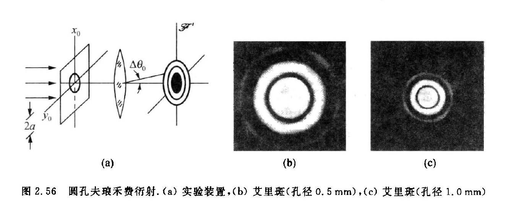
U ~ ( θ ) = c ~ e i k 0 L 0 ⋅ 2 J 1 ( x ) x \tilde{U}(\theta)
=\tilde{c}e^{\mathrm{i}k_0 L_0}\cdot 2\frac{\mathrm{J}_1(x)}{x} U ~ ( θ ) = c ~ e i k 0 L 0 ⋅ 2 x J 1 ( x )
I ( θ ) = I 0 ( 2 J 1 ( x ) x ) 2 I(\theta)
=I_0\bigg( \frac{2 \mathrm{J}_1(x)}{x} \bigg)^2 I ( θ ) = I 0 ( x 2 J 1 ( x ) ) 2
其中，
x = 2 π a sin θ λ , I 0 = ( π a 2 ) 2 ( λ f ) 2 A 2 x
=\frac{2\pi a\sin\theta}{\lambda},~~
I_0
=\frac{(\pi a^2)^2}{(\lambda f)^2}A^2 x = λ 2 πa sin θ , I 0 = ( λ f ) 2 ( π a 2 ) 2 A 2
其中，a a a J 1 ( x ) \mathrm{J}_1(x) J 1 ( x )
中心的那个亮斑称为艾里斑 ，I 0 I_0 I 0
一阶贝塞尔函数的第一个零点 x 0 x_0 x 0
x 0 = 1.22 π x_0
=1.22\pi x 0 = 1.22 π
于是第一个暗环的角方位 θ 10 \theta_{10} θ 10
2 π a sin θ 10 λ = 1.22 π \frac{2\pi a\sin\theta_{10}}{\lambda}
=1.22 \pi λ 2 πa sin θ 10 = 1.22 π
圆孔直径记为 D D D D = 2 a D=2a D = 2 a
sin θ 10 = 1.22 λ D \sin\theta_{10}
=1.22\frac{\lambda }{D} sin θ 10 = 1.22 D λ
艾里斑的半角宽度：
Δ θ 0 = θ 10 ≈ 1.22 λ D \Delta \theta_0
=\theta_{10}
\approx1.22\frac{\lambda}{D} Δ θ 0 = θ 10 ≈ 1.22 D λ
或写为：
D Δ θ 0 ≈ 1.22 λ \boxed{
D\Delta \theta_0
\approx 1.22\lambda
} D Δ θ 0 ≈ 1.22 λ
瑞利判据
两个物点反映在像面上有两个艾里斑，设这两个艾里斑中心之角间隔为 δ θ , \delta \theta, δ θ , Δ θ 0 , \Delta\theta_0, Δ θ 0 ,
δ θ > Δ θ 0 时，可分辨 ; δ θ < Δ θ 0 时，不可分辨 δ = Δ θ 0 时，给出可分辨的最小角间隔 δ m \delta\theta>\Delta\theta_0 时，可分辨;\\
\delta\theta<\Delta\theta_0 时，不可分辨 \\
\delta =\Delta\theta_0 时，给出可分辨的最小角间隔\delta_m δ θ > Δ θ 0 时，可分辨 ; δ θ < Δ θ 0 时，不可分辨 δ = Δ θ 0 时，给出可分辨的最小角间隔 δ m
瑞利判据规定，当一个像斑中心恰好落在另一像斑边缘暗环时，确认两个像斑刚好可以分辨。
位移-相移定理
在一个夫琅禾费衍射系统中，当一图像位移时，其夫琅禾费衍射场将响应一个相移，两者的定量关系为：
位移 ( x 0 , y 0 ) ⇋ 相移 ( δ 1 , δ 2 ) 位移(x_0,y_0)\leftrightharpoons 相移(\delta_1,\delta_2) 位移 ( x 0 , y 0 ) ⇋ 相移 ( δ 1 , δ 2 )
δ 1 = − k x 0 sin θ 1 δ 2 = − k y 0 sin θ 2 \delta_1=-kx_0\sin\theta_1 \\
\delta_2=-ky_0\sin\theta_2 δ 1 = − k x 0 sin θ 1 δ 2 = − k y 0 sin θ 2
其中，θ 1 , θ 2 \theta_1,\theta_2 θ 1 , θ 2
有序结构的夫琅禾费衍射场
设一衍射屏含 N N N u ~ 0 ( θ 1 , θ 2 ) , \tilde{u}_0(\theta_1,\theta_2) , u ~ 0 ( θ 1 , θ 2 ) , r ⃗ j = ( x j , y j ) \vec{r}_j=(x_j,y_j) r j = ( x j , y j )
δ 1 j = − k x j sin θ 1 \delta_{1j}=-kx_j\sin\theta_1 δ 1 j = − k x j sin θ 1
δ 2 j = − k y j sin θ 2 \delta_{2j}=-ky_j\sin\theta_2 δ 2 j = − k y j sin θ 2
于是这有序结构产生的夫琅禾费场的组成为：
{ u ~ 0 ( θ 1 , θ 2 ) , u ~ 1 ( θ 1 , θ 2 ) = u ~ 0 ⋅ e i ( δ 11 + δ 21 ) , u ~ 2 ( θ 1 , θ 2 ) = u ~ 0 ⋅ e i ( δ 12 + δ 22 ) , u ~ 3 ( θ 1 , θ 2 ) = u ~ 0 ⋅ e i ( δ 13 + δ 23 ) , ⋮ \begin{cases}
\tilde{u}_0(\theta_1,\theta_2), \\
\tilde{u}_1(\theta_1,\theta_2)=\tilde{u}_0\cdot e^{\mathrm{i}(\delta_{11}+\delta_{21})}, \\
\tilde{u}_2(\theta_1,\theta_2)=\tilde{u}_0\cdot e^{\mathrm{i}(\delta_{12}+\delta_{22})}, \\
\tilde{u}_3(\theta_1,\theta_2)=\tilde{u}_0\cdot e^{\mathrm{i}(\delta_{13}+\delta_{23})}, \\~~~~~~~~~~~~~~~~~~\vdots
\end{cases} ⎩ ⎨ ⎧ u ~ 0 ( θ 1 , θ 2 ) , u ~ 1 ( θ 1 , θ 2 ) = u ~ 0 ⋅ e i ( δ 11 + δ 21 ) , u ~ 2 ( θ 1 , θ 2 ) = u ~ 0 ⋅ e i ( δ 12 + δ 22 ) , u ~ 3 ( θ 1 , θ 2 ) = u ~ 0 ⋅ e i ( δ 13 + δ 23 ) , ⋮
根据波叠加原理，我们得到 N N N
U ~ ( θ 1 , θ 2 ) = ∑ i = 0 ( N − 1 ) u ~ i = u ~ 0 ∑ i = 0 N − 1 e i ( δ 1 i + δ 2 i ) \tilde{U}(\theta_1,\theta_2)
=\sum_{i=0}^{(N-1)}\tilde{u}_i
=\tilde{u}_0\sum_{i=0}^{N-1} e^{\mathrm{i}(\delta_{1i}+\delta_{2i})} U ~ ( θ 1 , θ 2 ) = i = 0 ∑ ( N − 1 ) u ~ i = u ~ 0 i = 0 ∑ N − 1 e i ( δ 1 i + δ 2 i )
上式中规定，δ 10 = δ 20 = 0 \delta_{10}=\delta_{20}=0 δ 10 = δ 20 = 0
上式可以改写为：
U ~ ( θ 1 , θ 2 ) = u ~ 0 ( θ 1 , θ 2 ) ⋅ S ~ ( θ 1 , θ 2 ) \tilde{U}(\theta_1,\theta_2)
=\tilde{u}_0(\theta_1,\theta_2)\cdot \tilde{S}(\theta_1,\theta_2) U ~ ( θ 1 , θ 2 ) = u ~ 0 ( θ 1 , θ 2 ) ⋅ S ~ ( θ 1 , θ 2 )
S ~ ( θ 1 , θ 2 ) = ∑ i = 0 N − 1 e i ( δ 1 i + δ 2 i ) \tilde{S}(\theta_1,\theta_2)
=\sum_{i=0}^{N-1} e^{\mathrm{i}(\delta_{1i}+\delta_{2i})} S ~ ( θ 1 , θ 2 ) = i = 0 ∑ N − 1 e i ( δ 1 i + δ 2 i )
其中，u ~ 0 \tilde{u}_0 u ~ 0 单元因子 或形状因子 ；S ~ ( θ 1 , θ 2 ) \tilde{S}(\theta_1,\theta_2) S ~ ( θ 1 , θ 2 ) 结构因子 或分布因子 。
一维光栅衍射
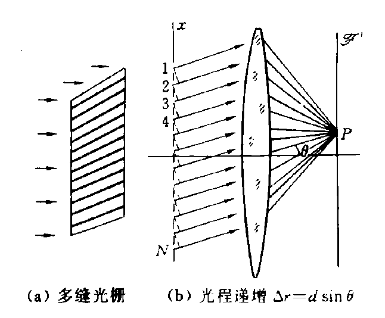
光栅定义：凡含众多全同单元，且排列规则、取向有序的周期结构，统称为光栅（grating）
设一个一维多缝光栅透光的缝宽为 a a a b b b d d d a + b a+b a + b 光栅常数 。单元密度定义为 1 d \frac{1}{d} d 1 D D D
N = D d N
=\frac{D}{d} N = d D
一维光栅的单元因子
一维光栅的基本单元就是宽度为 a a a b b b
u ~ 0 = c ~ e i k 0 L 0 ⋅ sin α α \tilde{u}_0
=\tilde{c} e^{\mathrm{i}k_0 L_0}\cdot\frac{\sin\alpha}{\alpha} u ~ 0 = c ~ e i k 0 L 0 ⋅ α sin α
一维光栅的结构因子
自上而下将 N N N 1 , 2 , ⋯ , N . 1,2,\cdots,N. 1 , 2 , ⋯ , N . x x x d d d δ = k d sin θ \delta=kd\sin\theta δ = k d sin θ
S ~ ( θ ) = ∑ i = 1 N ( 1 + e i δ + e i ( 2 δ ) + e i ( 3 δ ) + ⋯ + e i ( N − 1 ) δ ) = 1 − e i N δ 1 − e i δ , δ = k d sin θ \begin{aligned}
\tilde{S}(\theta)
&=\sum_{i=1}^{N}(1+e^{\mathrm{i}\delta}+e^{\mathrm{i}(2\delta)}+e^{\mathrm{i}(3\delta)}+\cdots+e^{\mathrm{i}(N-1)\delta}) \\
&=\frac{1-e^{\mathrm{i}N\delta}}{1-e^{\mathrm{i}\delta}},~~\delta=kd\sin\theta
\end{aligned} S ~ ( θ ) = i = 1 ∑ N ( 1 + e i δ + e i ( 2 δ ) + e i ( 3 δ ) + ⋯ + e i ( N − 1 ) δ ) = 1 − e i δ 1 − e i N δ , δ = k d sin θ
利用公式：
1 − e i φ = − 2 i sin ( φ 2 ) ⋅ e i ( φ 2 ) 1-e^{\mathrm{i}\varphi}
=-2\mathrm{i}\sin(\frac{\varphi}{2})\cdot e^{\mathrm{i}(\frac{\varphi}{2})} 1 − e i φ = − 2 i sin ( 2 φ ) ⋅ e i ( 2 φ )
结构因子可进一步表达为：
S ~ ( θ ) = 1 − e i N δ 1 − e i δ = − 2 i sin ( N δ 2 ) ⋅ e i ( N δ 2 ) / − 2 i sin ( δ 2 ) ⋅ e i ( δ 2 ) = e i ( N − 1 ) β ⋅ ( sin N β sin β ) , β = π d sin θ λ \begin{aligned}
\tilde{S}(\theta)
&=\frac{1-e^{\mathrm{i}N\delta}}{1-e^{\mathrm{i}\delta}} \\
&=-2\mathrm{i}\sin(\frac{N\delta}{2})\cdot e^{\mathrm{i}(\frac{N \delta}{2})}\bigg/ -2\mathrm{i}\sin(\frac{\delta}{2})\cdot e^{\mathrm{i}(\frac{\delta}{2})} \\
&=e^{\mathrm{i}(N-1)\beta}\cdot\bigg( \frac{\sin N\beta}{\sin \beta} \bigg),~~\beta=\frac{\pi d\sin\theta}{\lambda}
\end{aligned} S ~ ( θ ) = 1 − e i δ 1 − e i N δ = − 2 i sin ( 2 N δ ) ⋅ e i ( 2 N δ ) / − 2 i sin ( 2 δ ) ⋅ e i ( 2 δ ) = e i ( N − 1 ) β ⋅ ( sin β sin Nβ ) , β = λ π d sin θ
于是一维光栅的夫琅禾费场为：
U ~ ( θ ) = u ~ 0 ( θ ) ⋅ S ~ ( θ ) = c ~ e i k 0 L 0 ⋅ sin α α ⋅ e i ( N − 1 ) β ⋅ ( sin N β sin β ) \begin{aligned}
\tilde{U}(\theta)
&=\tilde{u}_0(\theta)\cdot\tilde{S}(\theta) \\
&=\tilde{c} e^{\mathrm{i}k_0 L_0}\cdot\frac{\sin\alpha}{\alpha}\cdot e^{\mathrm{i}(N-1)\beta}\cdot\bigg( \frac{\sin N\beta}{\sin \beta} \bigg) \\
\end{aligned} U ~ ( θ ) = u ~ 0 ( θ ) ⋅ S ~ ( θ ) = c ~ e i k 0 L 0 ⋅ α sin α ⋅ e i ( N − 1 ) β ⋅ ( sin β sin Nβ )
把 e i k 0 L 0 e^{\mathrm{i}k_0L_0} e i k 0 L 0 c ~ \tilde{c} c ~
U ~ ( θ ) = c ~ ( sin α α ) ⋅ ( sin N β sin β ) e i ( N − 1 ) β \tilde{U}(\theta)
=\tilde{c}\bigg( \frac{\sin\alpha}{\alpha} \bigg) \cdot\bigg( \frac{\sin N\beta}{\sin \beta} \bigg) e^{\mathrm{i}(N-1)\beta} U ~ ( θ ) = c ~ ( α sin α ) ⋅ ( sin β sin Nβ ) e i ( N − 1 ) β
其中，
α = π a sin θ λ , β = π d sin θ λ \alpha
=\frac{\pi a\sin\theta}{\lambda},~~
\beta
=\frac{\pi d\sin\theta}{\lambda} α = λ πa sin θ , β = λ π d sin θ
衍射强度分布为：
I ( θ ) = U ~ U ~ ∗ = i 0 ( sin α α ) 2 ( sin N β sin β ) 2 I(\theta)
=\tilde{U}\tilde{U}^*
=i_0\bigg( \frac{\sin\alpha}{\alpha} \bigg)^2\bigg( \frac{\sin N\beta}{\sin \beta} \bigg)^2 I ( θ ) = U ~ U ~ ∗ = i 0 ( α sin α ) 2 ( sin β sin Nβ ) 2
上式中，i 0 i_0 i 0 ( sin α / α ) 2 (\sin\alpha/\alpha)^2 ( sin α / α ) 2 ( sin N β / sin β ) 2 (\sin N\beta/\sin\beta)^2 ( sin Nβ / sin β ) 2
一维光栅结构因子的主要特征
（1）主峰（主极强位置）
β = j π ⟹ d sin θ j = j λ , j = 0 , ± 1 , ± 2 , ⋯ \beta
=j\pi
\Longrightarrow
d \sin\theta_j
=j\lambda,~~j=0,\pm 1,\pm 2,\cdots β = jπ ⟹ d sin θ j = jλ , j = 0 , ± 1 , ± 2 , ⋯
此时：
( sin N β sin β ) 2 = N 2 \bigg( \frac{\sin N\beta}{\sin \beta} \bigg)^2
=N^2 ( sin β sin Nβ ) 2 = N 2
I ( θ j ) = N 2 ⋅ ( θ j ) I(\theta_j)
=N^2\cdot (\theta_j) I ( θ j ) = N 2 ⋅ ( θ j )
（2）主峰的半角宽度
第 j j j
d sin ( θ j ± Δ θ ) = ( k ± 1 N ) λ ⟹ d cos θ j ⋅ Δ θ = λ N d\sin(\theta_j\pm \Delta \theta)
=(k\pm \frac{1}{N})\lambda
\Longrightarrow
d\cos\theta_j\cdot\Delta \theta
=\frac{\lambda}{N} d sin ( θ j ± Δ θ ) = ( k ± N 1 ) λ ⟹ d cos θ j ⋅ Δ θ = N λ
第 j j j
Δ θ j = λ N d cos θ j \Delta \theta_j
=\frac{\lambda}{Nd \cos\theta_j} Δ θ j = N d cos θ j λ
（3）两个主峰之间
（4）单元因子作用
d sin θ j = j λ d\sin\theta_j
=j\lambda d sin θ j = jλ
a sin θ j ′ = j ′ λ a\sin\theta_{j'}
=j'\lambda a sin θ j ′ = j ′ λ
j j ′ = d a \frac{j}{j'}
=\frac{d}{a} j ′ j = a d
出现缺级现象